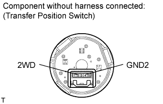

4WD CONTROL SWITCH > INSPECTION |
| 1. INSPECT TRANSFER POSITION SWITCH |
 |
Measure the resistance according to the value(s) in the table below.
| Tester Connection | Switch Condition | Specified Condition |
| 2 (2WD) - 4 (GND2) | H4 Position | 100 kΩ or higher |
| L4 Position | Below 1 Ω |